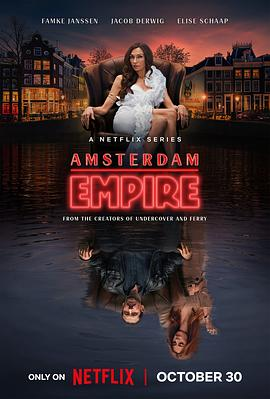

0.0
阿姆斯特丹帝国
Amsterdam Empire
2025
其他
评分 0.0
导演:
乔纳斯·戈瓦特斯（Jonas Govaerts）
演员:
法米克·詹森（Famke Janssen） / 雅各布·德威格（Jacob Derwig） / 爱丽丝·夏普（Elise Schaap） / 贾德·奥利伯格（Jade Olieberg） / 雅尼克·范德威尔德（Yannick van de Velde） / Jesse Mensah
类型:
剧情,犯罪
剧情简介
在阿姆斯特丹光鲜却暗潮涌动的咖啡店帝国背后，杰克·范多恩（Jack van Doorn）从一个街头成长起来，打造出名为“The Jackal”的大麻 咖啡店连锁帝国。他的风光、财富以及权力让他看似不可动摇。然而，当他的绯闻被披露、婚姻冲破表面平静，他最危险的敌人竟然是自己的妻子——前流行乐天后贝蒂·乔克斯（Betty Jonkers）。贝蒂曾是社交场上的焦点，但嫁给杰克之后，她逐渐失去了自我与控制。杰克的一次公开劈腿让她彻底觉醒：她决定夺回一切，从豪宅到帝国。与此同时，杰克的新欢、一位记者马若琳·霍夫曼（Marjolein Hofman）和怀孕的消息，像一枚定时炸弹，点燃了这场权力、背叛与复仇的战争。随着贝蒂一步步揭开杰克帝国的暗面，她利用自己熟知的内情撕开昔日婚姻的遮掩。杰克在试图稳住生意、应付法律、摆平竞争对手时，发现自己其实正走入妻子布下的陷阱。他们在奢华与阴谋、爱恨之间角力：家族、忠诚、金钱、法律交错成一张巨网。这部七集迷你剧透过阿姆斯特丹大麻产业的表象，深入探讨权力买卖、家庭裂痕与女性复仇，打造出既有商业帝国气场又有私人情感裂隙的紧张氛围。观众将被邀请进入这座城市的夜色、烟雾与欲望中，看一场婚姻、财富和正义的博弈。